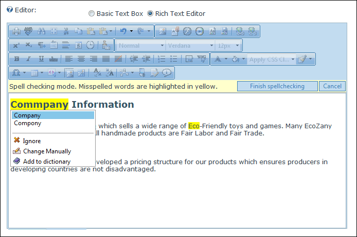

Check Spelling
How to check spelling using the TelerikEditorProvider RTE.
- Place your cursor inside the Editor.
- Click the AJAX Spellchecker button. This starts spell checking. Misspelled words are highlighted in yellow. The first misspelt word is ready to perform one of the following actions against:
- Choose Suggested: Select the correct word from the list of suggested words. If no suggestions are available, then (no suggestions) is displayed.
- Ignore/Ignore All: Select to ignore this word and continue with spell checking.
- Change Manually: Select and enter word into the provided text box and then click the Change Manually icon.
- Add to Dictionary: Select to add the word to your dictionary.
- Repeat for each misspelt word.
- Click the Finish Spellchecking button when you are finished - OR - Click the Cancel button to exit Spell checking mode.
Tip: Edit any misspelt word by clicking on it.

Spell Checking using the RadEditor